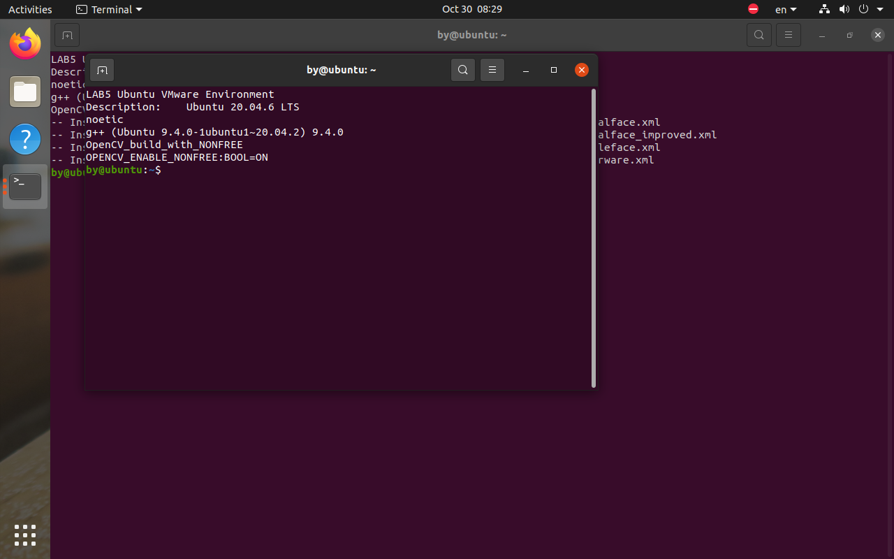
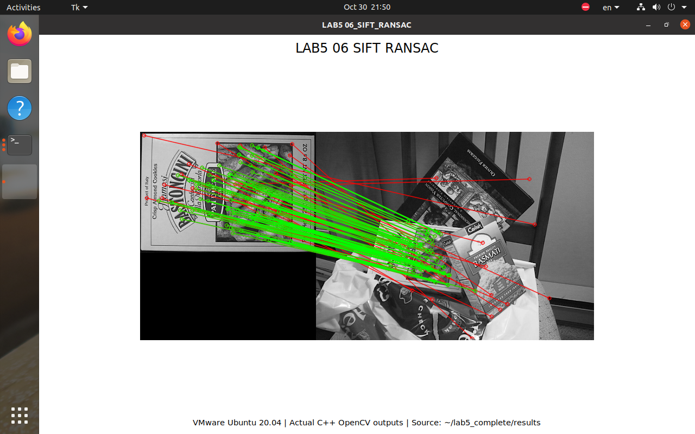
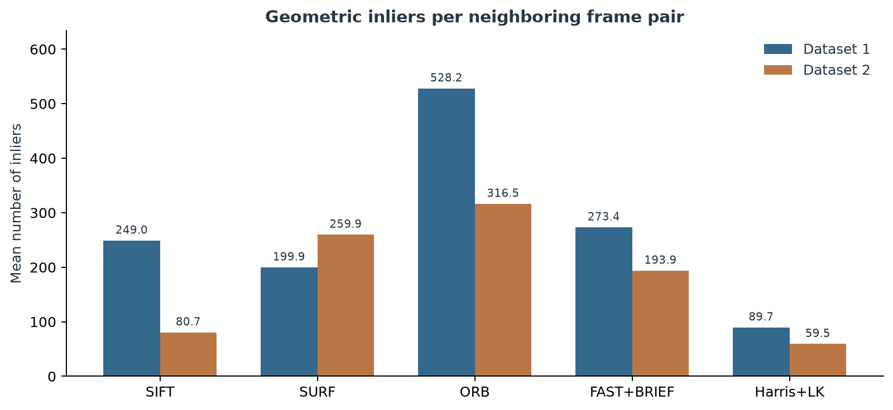
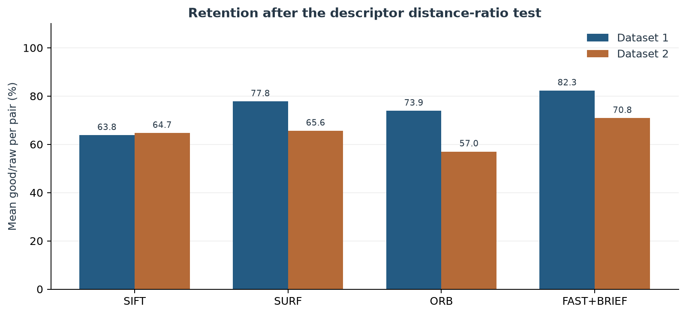
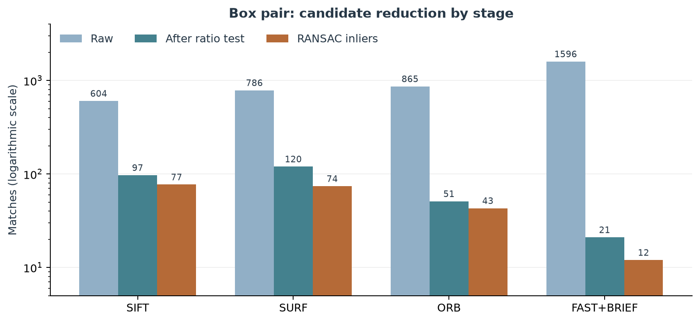
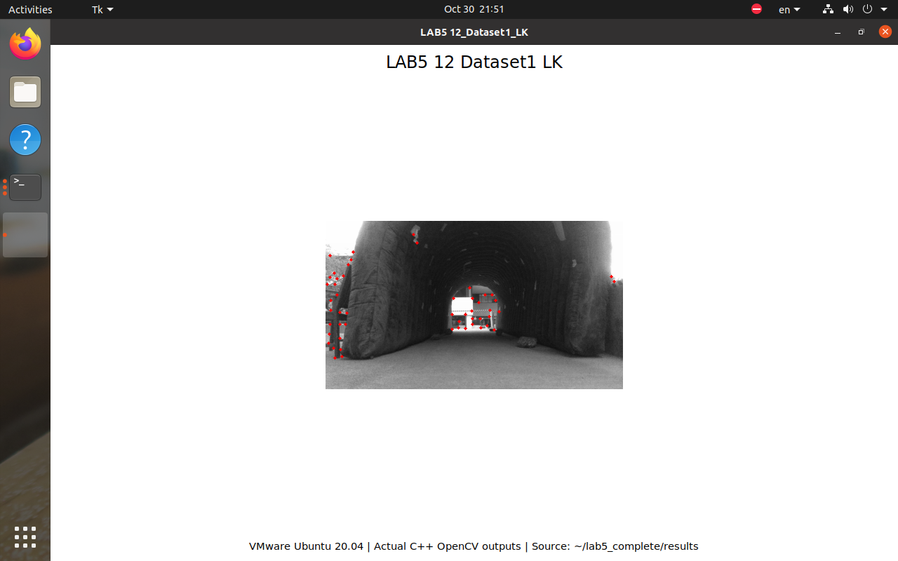
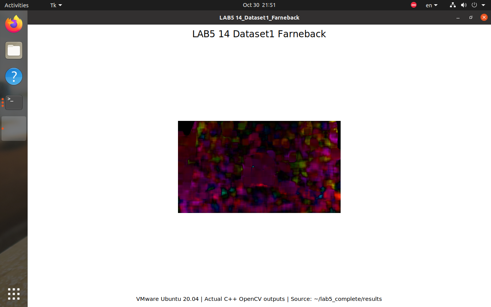
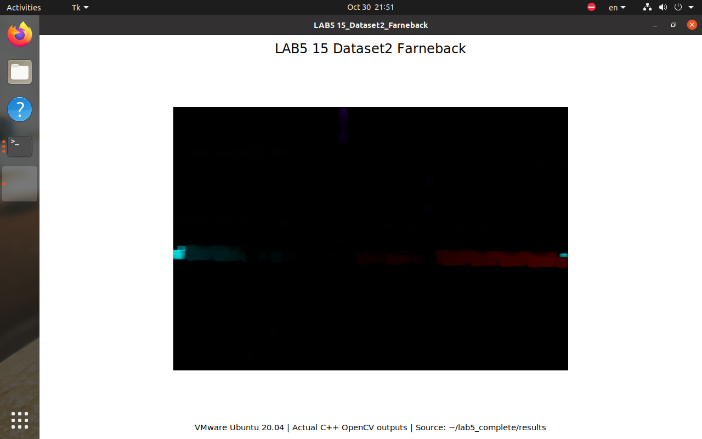
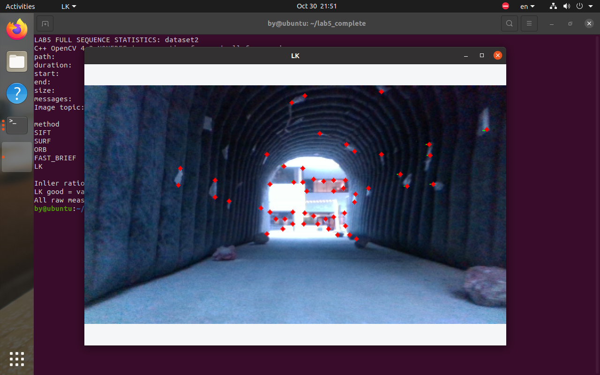

VNAV Lab5 无人机视觉跟踪
黄博宇 24020036026；中外计科一班；第8组
实验记录：2026年10月30日至31日；报告整理：2026年10月31日
摘要
本实验在 VMware Ubuntu 20.04 与 ROS Noetic 中完成视觉特征匹配和跟踪。补全 SIFT、SURF、ORB、FAST+BRIEF 与 Harris+LK 的 C++ 实现，并对两段官方序列的 1,583 和 1,385 个相邻帧对进行完整评估。第一段和第二段中，ORB 的平均几何内点数分别为 528.2 和 316.5；FAST+BRIEF 的平均计算耗时分别为 1.92 和 1.65 ms。报告保留17张实际截图，增加7张原始数据图表，并给出投影、消失点推导及可复现的统计口径。几何内点不等同于人工真值。[1-3,7]
1 引言
Lab3 关注怎样跟上目标，Lab4 关注怎样规划路线；Lab5 进一步关注如何从图像找到可反复识别的点，并把相邻帧的点对应起来。特征检测相当于挑选路标，描述子给路标建立“特征卡”，匹配和几何验证则检查是不是同一处。本文按实验设置、实现、结果、讨论与结论组织，与此前 Lab3/Lab4 报告保持一致。
表1 实验任务与交付证据
| 交付项 | 内容 | 证据入口 |
| D1 | 球体投影 | Section 4 |
| D2 | 消失点 | Section 4 |
| D3 | SIFT检测描述 | Figures 03-04 |
| D4 | 匹配与比值筛选 | Figures 04-05 |
| D5 | 几何内点和统计 | Figure 06, tables |
| D6 | 算法与真实序列比较 | Figures 07-11,19-24 |
| D7 | Harris+LK | Figures 12-13,17 |
| D8 | Farneback选做 | Figures 14-15 |
2 实验设置
表2 实验环境和统一参数
| 项目 | 配置 | 用途 |
| 系统 | Ubuntu 20.04 / ROS Noetic | 运行ROS程序 |
| OpenCV | 4.2.0 contrib; NONFREE=ON | 支持SIFT和SURF |
| 工作空间 | ~/lab5_complete/ws | 隔离已有实验 |
| 比值筛选 | d1 < 0.8*d2 | 删除模糊匹配 |
| RANSAC | 3 px; confidence 0.99 | 检查极线一致性 |
| 评估 | 1 OpenCV thread; seed 42 | 完整遍历与可复算统计 |

图01和图02对应实际 Ubuntu 环境。OpenCV 独立编译，避免直接替换系统依赖；编译参数和动态链接记录保存在 logs。课程代码来源与构建依据见[2,4]。
3 实现流程与参数
表3 各方法的组成
| 方法 | 检测和描述 | 匹配或跟踪 |
| SIFT | 尺度空间；128维浮点 | FLANN, ratio 0.8 |
| SURF | Hessian阈值400；浮点描述子 | FLANN, ratio 0.8 |
| ORB | 最多1000点；32字节二值 | Hamming BF, ratio 0.8 |
| FAST+BRIEF | FAST阈值20；BRIEF 32字节 | Hamming BF, ratio 0.8 |
| Harris+LK | 最多500角点；质量0.01；间隔8px | 21x21窗口；最大层级3 |
补全了 SiftFeatureTracker、SurfFeatureTracker、OrbFeatureTracker、FastFeatureTracker 的检测、描述和匹配函数，以及通用 FeatureTracker 的几何验证、可视化和均值统计。为 FAST 单独使用 BRIEF 提取器，避免把 FAST 检测器误作描述子。
SIFT 与 SURF 使用 FLANN KD tree 的二近邻匹配；ORB 与 BRIEF 使用 Hamming 距离的 BFMatcher。所有描述子统一采用 d1<0.8d2 的严格距离比筛选。对空描述子、目标描述子不足两个、某近邻列表不足两个等情况做保护。
RANSAC 采用基本矩阵估计，最大极线距离 3 像素，置信度 0.99；保留原模板的算法含义，仅更新 OpenCV 4 的枚举名称。少于 8 个候选点时不调用估计；空匹配的内点率记为 0，避免除零。输出对应点时使用匹配索引和同一掩码，保持点对顺序。 [2,4,6]
图18中描述子路径先匹配再验证；LK路径在局部窗口估计运动，再使用相同几何检查。实现对空描述子、二近邻不足、少于8对点和零分母都作了保护。
4 个人理论题
4.1 球体的透视投影
归一化针孔相机的像平面为 z=1。令像点为 (u,v)，对应方向 q=(u,v,1)，从光心出发的射线为 X=tq，且可见部分要求 t>0。球体半径 r，球心 C=(0,0,d)，其中 d>r+1。
把射线代入球面方程，可得：
(u²+v²+1)t² - 2dt + d²-r² = 0。
像点位于球体投影内部，当且仅当射线与球面有实交点。轮廓对应重根，即判别式为零：
d² - (u²+v²+1)(d²-r²) = 0。
整理得到轮廓方程 u²+v² = r²/(d²-r²)。因此光轴上球体的投影为圆盘，边界半径为 r/√(d²-r²)，不是直接用球心深度得到的 r/d。后者仅为 r 远小于 d 时的近似。
当球心为任意 C=(a,b,c) 时，同样由射线与球面相切得到：
(au+bv+c)² - (a²+b²+c²-r²)(u²+v²+1) = 0。
在整个球体位于相机前方的通常可见条件 c>r 下，关于 (u,v) 的二次型矩阵为 [a,b]T[a,b]-(a²+b²+c²-r²)I。其两个特征值分别为 r²-c² 与 r²-a²-b²-c²，均小于零，因此轮廓是椭圆；当 a=b=0 时为圆。偏轴椭圆的中心一般不等于球心的透视投影。例如 a²+b²>0 时，椭圆中心为 (ac/(c²-r²), bc/(c²-r²))。
若完全放宽位置限制，球体可能跨越相机平面；此时切锥与像平面可形成抛物线或双曲线，且还需施加前向射线条件。故“任意位置总是椭圆”需要明确球体完全处于相机前方这一前提。 [1]
4.2 平行直线的消失点
设两条平行直线为 X1=P1+λD、X2=P2+μD，共同方向 D=(Dx,Dy,D_z)。齐次投影为：
[Px+λDx : Py+λDy : P_z+λD_z]。令参数趋于无穷，得到共同消失点 v∞=[Dx:Dy:D_z]。
当 D_z≠0 时，有限消失点为 (Dx/D_z,Dy/D_z)。当 D_z=0 时，消失点位于无穷远。此时每条直线的深度恒定，投影可写成 p(λ)=(Px/P_z,Py/P_z)+λ(Dx/P_z,Dy/P_z)，因此两条像直线的方向均与 (Dx,Dy) 平行。
所以，对两条投影互不重合且不退化的直线，三维方向与像平面平行，即 D_z=0，是投影仍平行的条件。若直线经过光心而退化成点，或两条投影重合，则不属于两条不同像直线保持平行的情形。 [1]
5 双图实验 特征提取与原始匹配
SIFT 先在尺度空间中定位特征并确定主方向，再以局部梯度直方图形成描述子。默认描述子维数为 4×4×8=128，使用浮点存储。描述计算可能删除无法获得有效邻域的关键点，因此统计以描述计算后的关键点数为准。
直接选择每个描述子的最近邻会产生许多错误连接。距离比检查两个近邻是否足够可区分，能够去除重复纹理和描述不唯一造成的部分误匹配；它不是几何正确性的证明。 [4]


5.1 距离比筛选与几何内点


表4 实测统计 pair
| 方法 | 帧对 | 特征1 | 特征2 | 原始 | 筛后 | 内点 | 内点率 | 耗时ms |
| SIFT | 1 | 604.0 | 969.0 | 604.0 | 97.0 | 77.0 | 79.4% | 110.15 |
| SURF | 1 | 786.0 | 1040.0 | 786.0 | 120.0 | 74.0 | 61.7% | 145.16 |
| ORB | 1 | 865.0 | 1000.0 | 865.0 | 51.0 | 43.0 | 84.3% | 12.99 |
| FAST_BRIEF | 1 | 1596.0 | 2489.0 | 1596.0 | 21.0 | 12.0 | 57.1% | 30.05 |
图中绿色为 RANSAC 内点，红色为外点。距离比筛选减少候选数量，基本矩阵再根据极线几何剔除部分不一致点。盒子图像具有较强平面结构，基本矩阵估计可能退化；本实验的“内点”仅表示符合所估计模型，不能作为人工标注意义上的真实准确率。 [6,7]
5.2 SURF ORB 与 FAST BRIEF


FAST 负责快速角点检测，本身不生成描述子；BRIEF 对邻域像素对进行二值比较，得到 32 字节描述子。二值描述子使用 Hamming 距离，比把二进制字节转换为浮点后使用欧氏距离更符合其定义。
当前 FAST 阈值为 20，开启非极大值抑制；BRIEF 长度 32 字节，未启用额外旋转补偿。ORB 设置最多 1000 个关键点，使用多尺度金字塔。SURF Hessian 阈值为 400，SIFT 使用默认参数。参数在两段真实序列上保持一致，避免为每个数据集单独调整后混淆比较。 [4,7]
6 真实序列与评估口径
表5 数据集与实际样本数
| 序列 | RGB话题 | 图像数 | 帧对数 |
| Dataset 1 | /camera/color/image_raw | 1584 | 1583 |
| Dataset 2 | /tesse/left_cam/rgb/image_raw | 1386 | 1385 |
完整遍历同一RGB话题的所有相邻图像，不跳帧、不混入深度图和其他相机。数据文件与桌面原始文件的SHA256一致，校验值记录在datasets.json。第二段使用仿真相对时间，不应把包内历史日期误认为实验日期。[3,7]

表6 关键统计量的含义
| 指标 | 定义 | 比较时注意 |
| 原始匹配 | 每个查询点的最佳候选 | 不是两近邻元素总数 |
| 筛后匹配 | 距离比通过的候选；LK为有效跟踪 | LK不使用距离比 |
| 内点率 | 先算每对内点/筛后，再平均 | 不等于累计数之比 |
6.1 第一段序列结果
表7 实测统计 dataset1
| 方法 | 帧对 | 特征1 | 特征2 | 原始 | 筛后 | 内点 | 内点率 | 耗时ms |
| SIFT | 1583 | 403.6 | 403.6 | 403.6 | 258.5 | 249.0 | 95.7% | 49.07 |
| SURF | 1583 | 265.3 | 265.4 | 265.3 | 205.8 | 199.9 | 97.0% | 44.68 |
| ORB | 1583 | 725.0 | 725.1 | 725.0 | 538.3 | 528.2 | 98.0% | 8.50 |
| FAST_BRIEF | 1583 | 342.3 | 342.3 | 342.3 | 282.0 | 273.4 | 96.6% | 1.92 |
| LK | 1583 | 91.0 | 89.8 | 89.8 | 89.8 | 89.7 | 99.9% | 2.07 |
数据集 30fps_424x240_2018-10-01-18-35-06.bag。使用选定 RGB 图像话题的所有相邻帧对，不跳帧、不抽取局部片段。每项统计取逐帧对算术平均；内点率取各帧对内点率的均值，而非汇总内点数除以汇总候选数。
本序列中，描述子方法里 ORB 的平均几何内点数最高，为 528.2；FAST_BRIEF 的平均计算耗时最低，为 1.92 ms。最高平均内点率来自 ORB，为 98.0%。这三个指标反映数量、代价和一致性，可能由不同方法占优。
Harris+LK 每对帧平均成功跟踪 89.8 个点，其中 89.7 个通过几何验证，平均耗时 2.07 ms。其连续小位移假设适合相邻视频帧，但在遮挡或大运动下不能保证持续跟踪。 [3,7]

数据来源：results/dataset1/*_frames.csv 与 *_summary.csv。图10为这些结果的终端展示，表格直接读取同一组文件。
6.2 第二段序列结果
表8 实测统计 dataset2
| 方法 | 帧对 | 特征1 | 特征2 | 原始 | 筛后 | 内点 | 内点率 | 耗时ms |
| SIFT | 1385 | 147.8 | 147.9 | 147.8 | 92.9 | 80.7 | 86.2% | 105.63 |
| SURF | 1385 | 475.9 | 476.3 | 475.9 | 299.4 | 259.9 | 87.2% | 135.19 |
| ORB | 1385 | 618.0 | 618.6 | 618.0 | 350.4 | 316.5 | 90.1% | 12.53 |
| FAST_BRIEF | 1385 | 299.0 | 299.3 | 299.0 | 209.9 | 193.9 | 92.1% | 1.65 |
| LK | 1385 | 65.4 | 63.8 | 63.8 | 63.8 | 59.5 | 93.7% | 5.21 |
数据集 vnav-lab5-smooth-trajectory.bag。话题选择与帧对构造方式和第一段一致。该包以仿真时间记录，时间戳约为 33.86 s 至 103.48 s；rosbag info 据此显示的历史日期不代表本次实验日期。完整逐帧表见 results/dataset2，各算法文件以方法名区分。
本序列中，描述子方法里 ORB 的平均几何内点数最高，为 316.5；FAST_BRIEF 的平均计算耗时最低，为 1.65 ms。最高平均内点率来自 FAST_BRIEF，为 92.1%。这三个指标反映数量、代价和一致性，可能由不同方法占优。
Harris+LK 每对帧平均成功跟踪 63.8 个点，其中 59.5 个通过几何验证，平均耗时 5.21 ms。其连续小位移假设适合相邻视频帧，但在遮挡或大运动下不能保证持续跟踪。 [3,7]

数据来源：results/dataset2。所有方法均评估1,385个帧对，与第一段采用相同参数和统计公式。
6.3 质量与计算代价


图20显示内点比例，图19显示绝对内点数量，两者不能相互替代。图21仅统计检测、描述、匹配、几何验证，排除文件读取、绘图和截图。纵轴采用对数刻度以同时展示约1至135 ms的范围；不应按柱高的线性差值估计倍数。虚拟机后台任务与调度会影响时间，这些结果不是硬实时保证。[7]
6.4 筛选阶段的数量变化


图22直接计算每帧对good/raw后再取平均，空原始集合记为0。LK没有描述子距离比，因此不放入该图。图23使用双图原始CSV，纵轴为对数刻度；筛掉的点多不一定意味着更好，必须结合留下的内点数量和场景变化解释。[7]
6.5 时序稳定性与耗时分布

图24保留完整序列顺序，用51帧对的后向平均减少单帧抖动；这只用于可视化，前述表格仍由全部原始帧对直接计算。曲线下降可能来自弱纹理、遮挡或运动变化，不能在缺少真值时只凭曲线确定原因。[7]
表9 逐帧耗时的中位数与95分位数 单位ms
| Method | D1 median | D1 P95 | D2 median | D2 P95 |
| SIFT | 49.16 | 63.93 | 103.59 | 124.44 |
| SURF | 48.82 | 63.92 | 121.42 | 259.97 |
| ORB | 8.75 | 10.91 | 11.74 | 17.18 |
| FAST_BRIEF | 1.67 | 4.02 | 1.29 | 3.86 |
| LK | 2.06 | 2.63 | 5.07 | 6.33 |
7 Harris 与 Lucas Kanade 跟踪
由亮度恒定 I(x,y,t)=I(x+u,y+v,t+1)，一阶近似得到 Ixu+Iyv+It=0。单个像素不足以求解两个运动分量，LK 假设局部窗口内运动近似一致，以最小二乘估计运动；Harris 角点在两个方向上具有足够梯度变化，有助于局部方程稳定求解。
跟踪使用 21×21 窗口、3 层最大金字塔级别、最多 500 个 Harris 角点、质量阈值 0.01、最小间距 8 像素。ROS 跟踪类保存前帧与存活角点，数量低于 150 时重新检测；离线比较表每对帧从前帧检测 Harris 角点后跟踪到后帧，以保证帧对统计口径固定。 [5]


LK 依赖亮度近似恒定、局部运动一致和线性化范围内的小位移。金字塔扩大可处理位移范围，但不能消除遮挡、运动模糊、弱纹理和剧烈光照变化造成的失败。描述子方法可以在更大位移下重新匹配，LK 则通常具有较低的局部跟踪代价。 [5]
8 Farneback 稠密光流选做
在两段真实视频中对相邻帧计算 Farneback 光流，参数为 pyr_scale=0.5、levels=3、winsize=15、iterations=3、poly_n=5、poly_sigma=1.2。色相表示方向，亮度表示该帧内归一化后的幅值，饱和度固定为 255。 [5]


由于每帧单独归一化，不能仅根据两幅图的亮度大小比较绝对速度；稠密光流覆盖整幅图像，也会在低纹理或遮挡区域产生不可靠运动估计。该扩展实验展示了稀疏特征跟踪与稠密运动场的输出差异。 [5]
9 ROS 交互运行证据

ROS 节点和离线评估器分别启动。FLANN 近似搜索与 RANSAC 的随机状态可能导致少量计数差异；报告比较表统一采用固定随机种子 42 的离线完整评估结果。交互窗口证明 ROS 消息与显示链路可正常运行。 [7]

使用课程 video_tracking.launch 启动 rosbag 播放与 Harris+LK 节点，验证真实图像话题的接收、灰度转换、状态检查和轨迹显示。交互启动用于验证运行链路，完整序列表由离线遍历生成，避免图形刷新或队列丢帧影响统计。 [7]
10 讨论
表10 各方法的实际取舍
| 方法 | 本实验观察 | 使用时注意 |
| SIFT | 对盒子视角变化保留较稳定的内点 | 本次虚拟机计算代价较高 |
| SURF | 第二段特征数比SIFT多 | 点多不保证内点率更高 |
| ORB | 两段平均内点数均最高 | 受尺度 纹理和检测预算影响 |
| FAST+BRIEF | 本次平均计算耗时最低 | 盒子图对匹配较弱 |
| Harris+LK | 连续小位移下保持较高内点率 | 特征2和筛后定义不同 |
本实验的内点依据估计的基本矩阵，而不是人工标注。盒子场景近似平面、相邻帧基线较小，可能使几何估计退化。不能把较高内点率直接写成“真实匹配准确率”。[6,7]
在线ROS跟踪与离线统计承担不同任务：前者检查消息和显示链路，后者避免队列丢帧并形成完整表格。LK在线类持续保存角点，离线表每对重新检测，因此两者不能混成同一条实验记录。[7]
图18至图24由保存的CSV通过make_report_charts.py生成，未手工填写结果。原始CSV、charts/chart_data.json、编号截图和数据集SHA256均保留，便于复算与检查。[7]
11 结论与复现
实验完成了从图像特征提取、二近邻匹配、距离比筛选到 RANSAC 几何验证的流程，以及 Harris+LK 稀疏跟踪和 Farneback 稠密光流。SIFT 和 SURF 提供尺度空间特征，ORB 与 FAST+BRIEF 提供较紧凑的二值描述，具体速度和匹配质量由场景运动、纹理及参数共同决定。
结果的主要限制包括：基本矩阵的内点掩码并不等于人工真值；平面场景可能退化；LK 和描述子方法的特征2统计含义不同；本实验耗时来自单台虚拟机上的单次完整遍历，存在后台下载与系统调度影响，并非硬实时性能保证。
依赖通过 build_opencv.sh 构建。把 feature_tracking 包放入 ws/src 后，切换到 ~/lab5_complete/ws，依次执行：
source /opt/ros/noetic/setup.bash
export OpenCV_DIR=$HOME/lab5_complete/opencv/lib/cmake/opencv4
catkin_make -DCMAKE_BUILD_TYPE=Release
source devel/setup.bash
完整序列评估在 ~/lab5_complete 目录中运行 bash run_all.sh。交互测试分别使用 two_frames_tracking.launch 和 video_tracking.launch，descriptor 设置为 SIFT 或 LK；视频模式额外提供 path_to_dataset 参数。完整命令见 README_提交说明.md。图像窗口按任意键结束，视频模式通过 Ctrl+C 结束。
离线完整评估：lab5_evaluate bag 数据集.bag 输出目录 SIFT。可将最后参数替换为 SURF、ORB、FAST_BRIEF、LK 或 FLOW。原始帧表、汇总表、启动日志和截图编号索引一同保存，可根据 CSV 重新计算表内均值。 [2,4,5,7]
表11 复现材料索引
| 材料 | 路径 | 用途 |
| 源码 | feature_tracking/ | ROS节点与离线评估器 |
| 统计 | results/pair, dataset1, dataset2 | 原始逐帧表和均值 |
| 截图 | screenshots/01...17 | 真实运行证据 |
| 图表 | charts/18...24 | 可复算PNG与矢量PDF |
| 脚本 | scripts/ | 依赖 运行 图表 报告 |
参考文献与数据出处
正文中的方括号编号对应下列来源。算法和API说明引用官方文档；具体性能数字引用本实验原始数据，不归因于文档中的演示结果。
[1] MIT VNAV LAB5 Exercises.
https://vnav.mit.edu/labs_2023/lab5/exercises.html
[2] MIT-SPARK VNAV-labs VNAV2021 release.
https://github.com/MIT-SPARK/VNAV-labs/releases/tag/VNAV2021
[3] MIT-SPARK VNAV lab data.
https://github.com/MIT-SPARK/VNAV-lab-data
[4] OpenCV 4.2 Feature Detection and Description.
https://docs.opencv.org/4.2.0/d5/d51/group__features2d__main.html
[5] OpenCV 4.2 Object Tracking.
https://docs.opencv.org/4.2.0/dc/d6b/group__video__track.html
[6] OpenCV 4.2 Camera Calibration and 3D Reconstruction.
https://docs.opencv.org/4.2.0/d9/d0c/group__calib3d.html
[7] LAB5 measured CSV records and numbered evidence.
https://github.com/hbyhby123/vnav-personal/tree/master/lab5/results
数据记录：2026-10-30至31。上游代码版本：2443ec7e491001d09ab8dd66f6b953177043b784。图01至17为本次Ubuntu实际截图；图18至24为原始CSV生成的统计图与流程图。排版参考同仓库Lab3/Lab4报告的章节、页眉、蓝灰色表格和图注形式，未复用其测量数据。
30fps_424x240_2018-10-01-18-35-06.bag
SHA256: 35fe022bf2477304ac94dd518f92471689d6c563358fec3e58ef48e66620c4b8
vnav-lab5-smooth-trajectory.bag
SHA256: 6895925a18b06ff9d73fa2cac4bd276f2ef17a09e48be9e79a599cad8fc81ab1